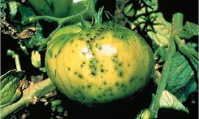

<!DOCTYPE html>
<html lang="Az">

<head>
    <meta charset="UTF-8">
    <meta name="viewport" content="width=device-width, initial-scale=1.0">
    <title>Smart Agro</title>
    <link rel="stylesheet" href="css/bootstrap.min.css">
    <style>
        .nav-link.active {
            color: red !important;
        }
    </style>
</head>

<!-- <a class="navbar-brand" href="#">Smart Agro</a> -->

<body>
    <nav class="navbar navbar-expand-lg bg-body-tertiary fixed-top ">
        <div class="container">
            <a class="navbar-brand" href="#">
                
              </a>
            <button class="navbar-toggler" type="button" data-bs-toggle="collapse" data-bs-target="#navbarNav"
                aria-controls="navbarNav" aria-expanded="false" aria-label="Toggle navigation">
                <span class="navbar-toggler-icon"></span>
            </button>
            <div class="collapse navbar-collapse justify-content-end" id="navbarNav">
                <ul class="navbar-nav fw-bold">
                    <li class="nav-item">
                        <a class="nav-link active" href="#home">Ana Sehife</a>
                    </li>
                    <li class="nav-item">
                        <a class="nav-link" href="#about">Haqqimizda</a>
                    </li>
                    <li class="nav-item">
                        <a class="nav-link" href="#plant">Bitkiler</a>
                    </li>
                    <li class="nav-item">
                        <a class="nav-link" href="#diseases">Bitki Xestelikleri</a>
                    </li>
                    <li class="nav-item">
                        <a class="nav-link" href="#pests">Bitki zerervericileri</a>
                    </li>
                    <li class="nav-item">
                        <a class="nav-link" href="#contact">Elaqe</a>
                    </li>

                </ul>
            </div>
        </div>
    </nav>

    <section class="min-vh-100 d-flex flex-column justify-content-end align-items-center" id="home"
        style="background-image: url('image/header.png'); background-size: cover;">
        <div class="text-center">
            <p class=" fw-bolder display-3 mb-3">Smart Agro</p>
            <h6 class=" fs-3 text-secondary text capitalize mb-4">Kend Teserrufat Teyinatli Bitkilerin-Saglamligi</h6>
        </div>
        <a class="btn btn-danger rounded-pill mb-2" href="#about">Haqqimizda</a>
    </section>

    <section class="container py-5" id="about">
        <div class="text-center py-5">
            <h2 class="text-uppercase fw-bolder">Haqqimizda</h2>
            <p>Bu web site Aqronomlara komek meqsedi ile yaradilib </p>
        </div>
        <div class="row">
            <div class="col-lg-4">
                
            </div>
            <div class="col-lg-7 offset-lg-1">
                <p class="lh-lg">
                    Kənd təsərrüfatı 2 əsas sahəyə bitkiçilik və heyvandarlıq sahələrinə ayrılır. Respublikamızda kənd
                    təsərrüfatı məhsullarının təxminən yarısı bitkiçilik sahələrində istehsal edilir.

                    Bitkiçiliyin əsas obyekti yaşıl bitkilərdir. Yaşıl bitkilər insanlar tərəfindən qədim dövrlərdən bu
                    günə qədər becərilərək cəmiyyətin bitkiçilik məhsullarına olan tələbatını ödəyirlər. Yaşıl bitkilər
                    yarpaqlarında qeyri-üzvi maddələrdən üzvi maddə yaratmaqla insanların ərzağa, sənayenin xammala,
                    heyvanların yemə olan tələblərini ödəyirlər. Ona görə də bitkiçilik məhsullarının artırılmasına
                    ehtiyac çoxdur. Bunu nəzərə alaraq hökumətimiz və xalqımız bitkiçilik məhsullarının artırılmasına
                    xüsusi fikir verir.

                    Bitkinin səmərəsini yüksəltmək üçün bitkiçilik elminin nailiyyətlərindən istifadə edilməklə
                    becərilən tarla bitkilərinin inkişafına daha əlverişli şərait yaradılır. Buna nail olmaq üçün
                    sələflərin düzgün seçilməsinə, bitkilərin növbələndirilməsinə, torpağın daha əlverişli üsullarla
                    becərilməsinə, səpinin daha mütərəqqi üsullarından istifadə edilməsinə, əkinlərin suvarılması,
                    gübrələnməsi, alaqlar, zərərverici və xəstəliklərə qarşı mübarizə aparılmasına, yığımın daha
                    mütərəqqi üsullarla həyata keçirilməsinə nail olunmalıdır.
                </p>
                <h3 class="fw-bold fs-4">Statistika</h3>
                <p class="mb-0">Denli ve Denli Paxlalilar:</p>
                <div class="progress mb-2">
                    <div class="progress-bar progress-bar-striped bg-success" style="width: 33.33%;">33.33% </div>
                </div>
                <p class="mb-0">Kartof:</p>
                <div class="progress mb-2">
                    <div class="progress-bar progress-bar-striped bg-info" style="width: 5.4%;">5.4% </div>
                </div>
                <p class="mb-0">Yem Bitkileri:</p>
                <div class="progress mb-2">
                    <div class="progress-bar progress-bar-striped bg-warning" style="width: 24.7%;">24.7% </div>
                </div>
                <p class="mb-0">Erzaq ucun becerilen bitkiler:</p>
                <div class="progress mb-2">
                    <div class="progress-bar progress-bar-striped bg-danger" style="width: 3.5%;">3.5% </div>
                </div>
                <p class="mb-0">Terevez:</p>
                <div class="progress mb-2">
                    <div class="progress-bar progress-bar-striped bg-dark" style="width: 9.3%;">9.3% </div>
                </div>
                <p class="mb-0">Texniki Bitkiler:</p>
                <div class="progress mb-2">
                    <div class="progress-bar progress-bar-striped bg-gradient" style="width: 5.6%;">5.6% </div>
                </div>
            </div>

        </div>
    </section>

    <section id="plant" class="bg-dark py-5">
        <div class="container">
            <div class="text-white text-center py-5">
                <h2 class="fw-bolder text-uppercase">Bitkiler</h2>
                <p>Azerbaycanda yetisdirilen kend teserrufat teyinatli bitkiler</p>
            </div>
            <div class="row pb-5">
                <div class="col-lg-4 col-md-6 mb-4">
                    
                </div>
                <div class="col-lg-4 col-md-6 mb-4">
                    
                </div>
                <div class="col-lg-4 col-md-6 mb-4">
                    
                </div>
                <div class="col-lg-4 col-md-6 mb-4">
                    
                </div>
                <div class="col-lg-4 col-md-6 mb-4">
                    
                </div>
                <div class="col-lg-4 col-md-6 mb-4">
                    
                </div>
            </div>
        </div>
    </section>

    <section id="diseases" class="py-5">
        <div class="container">
            <div class="text-center py-5">
                <h2 class="fw-bolder text-uppercase">Bitki Xestelikleri</h2>
                <p>Bitkilerde sirayetlenen infeksion ve qeyri infeksion xestelikler</p>
            </div>
            <div class="row">
                <div class="col-lg-4 col-md-6 mb-4">
                    <div class="card">
                        
                        <div class="card-body">
                            <h5 class="card-title text-center py-2">Bitkilerde Gobelek Xestelikleri</h5>
                            <p>
                                Göbələklər (Fungi) aləmi müxtəlif həyat tərzi ilə seçilir. Onlar
                                bitki orqanlarında parazitlik edərək onun məhsuldarlığını, keyfiyyət
                                göstəricilərini aşağı salır. Hazır üzvü maddələrlə qidalanır. Başlıca
                                göbələk növələri mikroskopik ölçülərə malikdir. Onlar mitsellərdən
                                13
                                ibarət vegetativ orqana malikdirlər və onun vasitəsilə qidalanır, çoxalır, inkişaf
                                edirlər. Xəstəlik törədən göbələklər bitki orqanlarında
                                yayılmasına görə ekzogen və endogen növlərə bölünür.
                            </p>
                            <a href="" class="btn btn-light">Davami...</a>
                        </div>
                    </div>
                </div>
                <div class="col-lg-4 col-md-6 mb-4">
                    <div class="card">
                        
                        <div class="card-body">
                            <h5 class="card-title text-center py-2">Bitkilerde Bakterial Xestelikler</h5>
                            <p>
                                Bakteriyalar xlorofilsiz birhüceyrəli mikroorqanizmlərdir. Yaşamaq və inkişaf etmək
                                üçün hazır qida maddələri istifadə edirlər.
                                Hər bakteriya ayrıca götürülmüş orqanizmdir və bir hüceyrədən ibarətdir. Bakteriyaların
                                çöpvari, vergülvari (vibronlar), bir quyruqlu,
                                iki və çox quyruqlu formaları olur. Onlar hərəkətli və hərəkətsiz olmaqla formaca 2
                                başlıca qrupa bölünür. Çoxalma və inkişaf baxımından sadə bölünmə və sporəmələgətirmə
                                (cinsi) yolu ilə çoxalan
                                bakteriya qrupları vardır.

                            </p>
                            <a href="" class="btn btn-light">Davami...</a>
                        </div>
                    </div>
                </div>
                <div class="col-lg-4 col-md-6 mb-4">
                    <div class="card">
                        
                        <div class="card-body">
                            <h5 class="card-title text-center py-2">Bitkilerde Virus Xestelikleri</h5>
                            <p>
                                Viruslar hüceyrə quruluşuna malik olmayan zülal təbəqəsindən, DNT və ya RNT zəncirindən
                                ibarət, həddən artıq kiçik ölçülərə
                                malikdir (millimetrin milyonda bir hisssəsinə qədər). Viruslar hüceyrə membranına malik
                                deyil. Hüceyrə şirəsi tərkibində çox sürətlə
                                çoxalaraq orqanların funksional proseslərində və biokimyəvi reaksiyalarda pozğunluq
                                yaradır. Fizioloji proseslərə təsir etməklə bitki
                                10
                                orqanizmində patoloji hallar (deformasiya, nekroz, xloroz, spirallaşma, müxtəlif
                                alabəzəklik və ləkəliklər) yaradır.

                            </p>
                            <a href="" class="btn btn-light">Davami...</a>
                        </div>
                    </div>
                </div>
            </div>
        </div>
    </section>

    <section id="pests" class="py-5">
        <div class="container">
            <div class="text-center py-5">
                <h2 class="fw-bolder text-uppercase">Bitki Zerervericileri</h2>
                <p>Bitkilerin menseyine gore heserat,alaq otlari,mikrorqanizmler ve gemirici tipli zerervericileri</p>
            </div>
            <div class="row">
                <div class="col-lg-4 col-md-6 mb-4">
                    <div class="card">
                        
                        <div class="card-body">
                            <h5 class="card-title text-center py-2">Bitkilere zererveren hesaratlar</h5>
                            <p>
                                Həşəratlar (lat. Insecta) — heyvanlar aləminin buğumayaqlılar tipinə aid heyvan sinfi.
                                Həşəratların 1 milyona yaxın növü məlumdur. Yer kürəsinin demək olar ki, hər bir
                                ekosistemində mövcuddur. Heyvanlar aləminin təqribən 80%-ni təşkil edən həşəratlar 30-a
                                qədər dəstəni əhatə edir. Ənənəvi təsnifata uyğun olaraq çoxayaqlılarla birlikdə
                                traxeyatənəffüslülər yarımtipinə aiddir.Zooloji nomenklaturanın Beynəlxalq kodeksi növ,
                                cins, fəsilə və onlar arasındakı adlara tətbiq olunur, lakin Insecta kimi qeyri — tipik
                                adlara tətbiq olunmur. Bunun nəticəsində elmi ədəbiyyatda "İnsecta" termini müxtəlif
                                taksonlar üçün istifadə edilmişdir.
                            </p>
                            <a href="" class="btn btn-light">Davami...</a>
                        </div>
                    </div>
                </div>
                <div class="col-lg-4 col-md-6 mb-4">
                    <div class="card">
                        
                        <div class="card-body">
                            <h5 class="card-title text-center py-2">Bitkilere zererveren alaq otlari</h5>
                            <p>
                                Alaq – becərilən bitkilər arasında özbaşına bitən bitki.
                                Azərbaycanda pambıq tarlalarında 92, qarğıdalı və yonca sahələrində müvafiq olaraq 120
                                və 125, payızlıq taxıl zəmilərində 152, tərəvəz əkinlərində 25, üzüm bağlarında 148 növ
                                alaq bitir.Alaq əkinçiliyə böyük zərər verir: becərilən bitkilərə lazım olan qida
                                maddələrinin,
                                suyun, işığın bir hissəsini alır; ziyanvericilərin, xəstəliklərin inkişafı üçün şərait
                                yaradır; becərməni, məhsul yığımını çətinləşdirir; Alaqlı yerlərdə kənd təsərrüfatı
                                bitkilərin məhsuldarlığı və məhsulun keyfiyyəti aşağı düşür. Alağa qarşı mübarizədə
                                aqrotexniki tədbirlərlə yanaşı kimyəvi mübarizə əsas yer tutur.[1]
                            </p>
                            <a href="" class="btn btn-light">Davami...</a>
                        </div>
                    </div>
                </div>
                <div class="col-lg-4 col-md-6 mb-4">
                    <div class="card">
                        
                        <div class="card-body">
                            <h5 class="card-title text-center py-2">Bitkilerde Gemiriciler</h5>
                            <p>
                                Siçanabənzər gəmiricilər məməlilər sinfinin gəmiricilər dəstəsinə (Rodentia) mənsub
                                olub, müxtəlif qidalarla qidalanan zərərvericilərdir. Siçankimilər (Muridae) (siçovul və
                                siçan cinsləri) və dağ siçanı (Cricetidae) (qum, dağ və çöl siçanı cinsləri) fəsilələri
                                daha çoxsaylıdırlar. Adi, ictimai, şərqi Avropa, su, uzaq şərq və monqol çöl siçanları,
                                boz və adi dağ siçanları, təpə düzəldən və ev siçanları kənd təsərrüfatı bitkilərinə çox
                                ziyan vururlar. Azərbaycan Respublikası ərazisində geniş yayılıb, kənd təsərrüfatı
                                bitkilərinə daha çox zərər vuran boz siçanlar cinsi (Microtus) nümayəndələri adi və
                                ictimai çöl siçanlarıdır. Boz siçanların çəkiləri 20 qram ətrafında dəyişir.
                            </p>
                            <a href="" class="btn btn-light">Davami...</a>
                        </div>
                    </div>
                </div>
            </div>
        </div>
    </section>

    <section class="bg-success py-5" id="contact">
        <div class="container">
            <div class="text-white  text-center py-5">
                <h2 class="fw-bolder text-uppercase">Elaqe</h2>
                <p>Her hansi sualiniz yaranarsa asagidaki emaile gondere bilersiz</p>
            </div>
            <div class="col-xxl-6 col-xl-7 col-lg-8 col-md-9 col-sm-10 col-11 mx-auto">
                <form class="text-white">
                    <div class="mb-3">
                        <label class="form-label">Ad Soyad</label>
                        <input type="text" class="form-control">
                    </div>

                    <div class="mb-3">
                        <label class="form-label">Email</label>
                        <input type="email" class="form-control">
                    </div>

                    <div class="mb-3">
                        <label class="form-label">Movzu</label>
                        <input type="text" class="form-control">
                    </div>

                    <div class="mb-3">
                        <label class="form-label">Mesaj</label>
                        <textarea type="" class="form-control" rows="7"></textarea>
                    </div>

                    <button class="btn btn-danger btn-lg">Gonder</button>
                </form>
            </div>
        </div>
    </section>

    <footer class="bg-light">
        <div class="text-center">
            <p class="fs-5 py-3 mb-0">Muellif haqlari qorunur | <a class="text-danger fst-italic"
                    href="https://www.turaltahir@gmail.com">Tural Tahir</a></p>
        </div>
    </footer>

    <script src="js/bootstrap.bundle.min.js"></script>
</body>

</html>